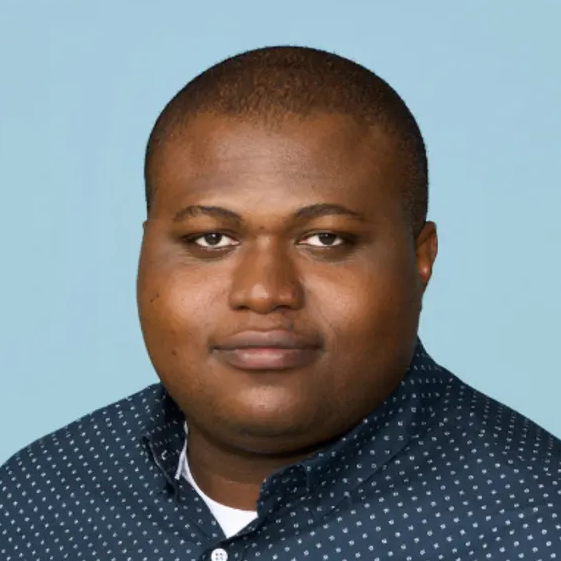
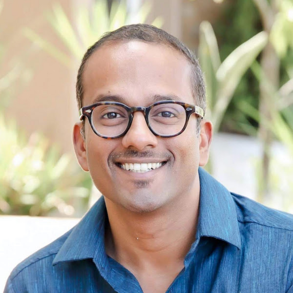
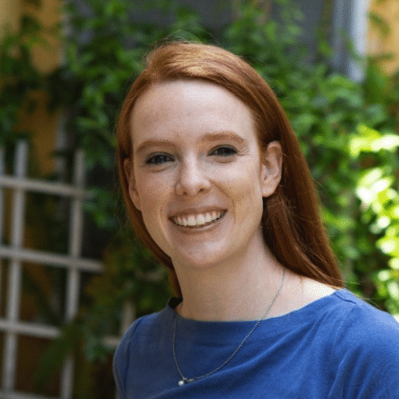

EMNLP 2026 Tutorial
Multilingual & Multicultural LLMs
Wednesday, October 28, 2026 · 14:00–17:30 · Budapest, Hungary



1Georgia Institute of Technology, 2Mila/McGill University, 3Google
4Adaption
About this Tutorial
While large language models (LLMs) have substantially expanded support for non-English languages, their ability to generalize across typologically diverse languages and produce contextually appropriate, culturally grounded responses remains a significant challenge. This tutorial examines the rapidly evolving area of understanding, evaluating, and improving the multilingual capabilities and multicultural alignment of LLMs.
We will primarily focus on cutting-edge advances and latest publications from 2025–2026, while incorporating selected introductory material to provide necessary background and to ensure accessibility for a broad audience. Participants will gain an up-to-date view of both methods and practical insights, including multilingual pre-, mid- and post-training, multilingual-specific optimization techniques, culturally aware evaluation, and key open problems in developing more fair, inclusive, and robust LLMs.
Tutorial Schedule
The tutorial will be held on October 28, 2026. All times are in Budapest local time (UTC+2).
| Time | Section | Presenter |
|---|---|---|
| 14:00 - 14:10 | Introduction | Wei/Vinod/Alan |
| 14:10 - 14:50 | Section 1: Multilingual reinforcement learning | Wei Xu |
| 14:50 - 15:30 | Section 2: Cross-lingual transfer learning | Alan Ritter |
| 15:30 - 16:00 | Break | - |
| 16:00 - 16:40 | Section 3: Broader considerations in multi-cultural evaluation | Vinodkumar Prabhakaran |
| 16:40 - 17:05 | Section 4: Multimodal-multicultural aspects | David Ifeoluwa Adelani |
| 17:05 - 17:30 | Section 5: Bending the curse of multilinguality: lessons from building frontier multilingual models | Sara Hooker |
Schedule is subject to change.
BibTeX
@inproceedings{xu-etal-2026-multilingual,
title={Multilingual Multicultural LLMs},
author={Xu, Wei and Ifeoluwa Adelani, David and Prabhakaran, Vinodkumar and Hooker, Sara and Ritter, Alan},
booktitle={Proceedings of the 2026 Conference on Empirical Methods in Natural Language Processing: Tutorial Abstracts},
year={2026}
}